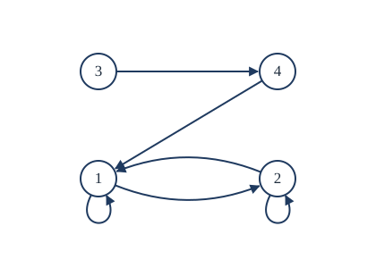
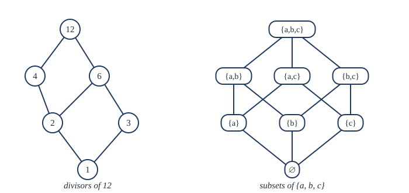

Chapter 5: Relations¶
Equivalence relations, partial orders and their pictures
Learning outcomes
After this chapter you should be able to:
- define a relation as a set of ordered pairs and represent it by a list, a matrix and a directed graph;
- decide whether a relation is reflexive, symmetric, antisymmetric or transitive, and prove it;
- compose relations and compute the reflexive, symmetric and transitive closures of a relation;
- recognise equivalence relations, find their equivalence classes, and explain the correspondence between equivalence relations and partitions;
- recognise partial orders, draw their Hasse diagrams, find maximal, minimal, greatest and least elements, and produce a topological sort.
5.1 Relations and how to represent them¶
Mathematics and computing are full of statements that relate two objects: "\(a\) is less than \(b\)", "\(a\) divides \(b\)", "student \(s\) is enrolled in course \(c\)", "web page \(p\) links to page \(q\)". A relation captures the idea in the simplest possible way: as the set of pairs that are related.
Definition: relation
A binary relation \(R\) from a set \(A\) to a set \(B\) is a subset of \(A \times B\). We write \(a \mathrel{R} b\) when \((a, b) \in R\). A relation on a set \(A\) is a relation from \(A\) to \(A\), that is, a subset of \(A \times A\).
A function \(f : A \to B\) is a special relation: its graph, in which each \(a \in A\) is related to exactly one \(b\). A general relation can relate an element to many elements, or to none.
Example 5.1: Relations on a small set
Problem. List the pairs of the relation "divides" on \(A = \{1, 2, 3, 4\}\).
Solution. \(a \mathrel{R} b\) when \(a \mid b\):
How many relations are there on a set with \(n\) elements? A relation is any subset of \(A \times A\), which has \(n^2\) elements, so there are \(2^{n^2}\) relations. Even on 3 elements that is \(2^9 = 512\).
Matrices and directed graphs¶
A relation on a finite set \(A = \{a_1, \dots, a_n\}\) can be shown in two other ways.
- The matrix \(M_R\) is the \(n \times n\) table of zeros and ones with a 1 in row \(i\), column \(j\) exactly when \(a_i \mathrel{R} a_j\).
- The directed graph (or digraph) has a dot (vertex) for each element and an arrow from \(a\) to \(b\) for each pair \((a, b) \in R\). A pair \((a, a)\) is drawn as a loop.
Figure 5.1 shows the relation \(S = \{(1,1), (1,2), (2,1), (2,2), (3,4), (4,1)\}\) on \(\{1, 2, 3, 4\}\) as a digraph; its matrix is

5.2 Properties of relations¶
Four properties of a relation \(R\) on a set \(A\) matter more than any others.
Definitions: reflexive, symmetric, antisymmetric, transitive
- \(R\) is reflexive if \(a \mathrel{R} a\) for every \(a \in A\).
- \(R\) is symmetric if \(a \mathrel{R} b\) implies \(b \mathrel{R} a\), for all \(a, b \in A\).
- \(R\) is antisymmetric if \(a \mathrel{R} b\) and \(b \mathrel{R} a\) together imply \(a = b\), for all \(a, b \in A\).
- \(R\) is transitive if \(a \mathrel{R} b\) and \(b \mathrel{R} c\) together imply \(a \mathrel{R} c\), for all \(a, b, c \in A\).
Each property has a picture. Reflexive: every vertex of the digraph has a loop, and the matrix has 1s all along the main diagonal. Symmetric: every arrow between two different vertices has a partner going back, and the matrix equals its transpose. Antisymmetric: no two different vertices have arrows both ways. Transitive: whenever there is a path of two arrows from \(a\) to \(c\), there is also a direct arrow from \(a\) to \(c\).
Antisymmetric is not 'not symmetric'
A relation can be both symmetric and antisymmetric (equality is) and can be neither (the relation \(S\) of Figure 5.1, which has \(1 \to 2\) and \(2 \to 1\), and has \(3 \to 4\) without \(4 \to 3\)). Antisymmetry forbids two-way arrows between different elements; it says nothing about loops.
Example 5.2: Checking the properties
Problem. Which of the four properties do these relations have? (a) \(\le\) on \(\mathbb{Z}\). (b) "divides" on \(\mathbb{Z}^{+}\). (c) \(a \mathrel{R} b\) iff \(\lvert a - b \rvert \le 1\), on \(\mathbb{Z}\). (d) The relation \(S\) of Figure 5.1.
Solution.
| Relation | Reflexive | Symmetric | Antisymmetric | Transitive |
|---|---|---|---|---|
| \(\le\) on \(\mathbb{Z}\) | yes | no | yes | yes |
| divides on \(\mathbb{Z}^{+}\) | yes | no | yes | yes |
| \(\lvert a - b \rvert \le 1\) | yes | yes | no | no |
| \(S\) | no | no | no | no |
For "divides": \(a \mid a\); if \(a \mid b\) and \(b \mid a\) for positive integers then \(a \le b\) and \(b \le a\), so \(a = b\); transitivity is Example 3.2. It is not symmetric: \(1 \mid 2\) but \(2 \nmid 1\). For (c): \(0 \mathrel{R} 1\) and \(1 \mathrel{R} 2\) but not \(0 \mathrel{R} 2\), so it is not transitive. For \(S\): \(3\) has no loop; \((3, 4) \in S\) but \((4, 3) \notin S\); \((1,2)\) and \((2,1)\) are both in \(S\); and \((3,4), (4,1) \in S\) but \((3,1) \notin S\).
5.3 Combining relations and closures¶
Relations are sets, so they can be combined with \(\cup\), \(\cap\) and \(-\). They can also be composed, like functions.
Definition: composition of relations
If \(R\) is a relation from \(A\) to \(B\) and \(S\) is a relation from \(B\) to \(C\), the composite \(S \circ R\) is the relation from \(A\) to \(C\) with \(a \mathrel{(S \circ R)} c\) when there is some \(b \in B\) with \(a \mathrel{R} b\) and \(b \mathrel{S} c\). The powers of a relation on \(A\) are \(R^1 = R\) and \(R^{n+1} = R^n \circ R\).
In the digraph, \(a \mathrel{R^n} b\) exactly when there is a path of \(n\) arrows from \(a\) to \(b\). With matrices, composition is a "Boolean product": the entry of \(M_{S \circ R}\) in row \(i\), column \(j\) is 1 when some \(k\) has a 1 in row \(i\), column \(k\) of \(M_R\) and in row \(k\), column \(j\) of \(M_S\). This is ordinary matrix multiplication with \(\wedge\) for multiplication and \(\vee\) for addition.
A useful fact: \(R\) is transitive if and only if \(R^2 \subseteq R\). (A pair in \(R^2\) comes from \(a \mathrel{R} b\) and \(b \mathrel{R} c\), and transitivity says exactly that \((a, c)\) is then in \(R\).)
Closures¶
If a relation lacks a property, we can add the fewest pairs needed to give it that property. The result is the closure of the relation with respect to the property.
- The reflexive closure of \(R\) is \(R \cup \{(a, a) : a \in A\}\): add all the loops.
- The symmetric closure of \(R\) is \(R \cup R^{-1}\), where \(R^{-1} = \{(b, a) : (a, b) \in R\}\): add the reverse of every arrow.
- The transitive closure of \(R\) is \(R^{*} = R \cup R^2 \cup R^3 \cup \dots\): add an arrow from \(a\) to \(b\) whenever there is a path from \(a\) to \(b\). On a set of \(n\) elements, paths longer than \(n\) add nothing new, so \(R^{*} = R \cup R^2 \cup \dots \cup R^n\).
Example 5.3: A transitive closure
Problem. Find the transitive closure of the relation \(S\) of Figure 5.1.
Solution. List, for each vertex, every vertex reachable by a path of one or more arrows. From 1: \(1, 2\). From 2: \(1, 2\). From 3: \(4\), then \(1\) (via 4), then \(2\) (via 4 and 1). From 4: \(1\), then \(2\). So
The new pairs are \((3,1)\), \((3,2)\) and \((4,2)\).
The transitive closure answers reachability questions: in a road network, can I get from \(a\) to \(b\) at all? Warshall's algorithm computes it for a relation on \(n\) elements in about \(n^3\) steps. It considers the vertices \(k = 1, 2, \dots, n\) in turn and adds the pair \((i, j)\) whenever \((i, k)\) and \((k, j)\) are present:
def warshall(m):
n = len(m)
w = [row[:] for row in m] # copy the matrix
for k in range(n):
for i in range(n):
for j in range(n):
w[i][j] = w[i][j] or (w[i][k] and w[k][j])
return w
S = [[1, 1, 0, 0],
[1, 1, 0, 0],
[0, 0, 0, 1],
[1, 0, 0, 0]]
for row in warshall(S):
print(row)
[1, 1, 0, 0]
[1, 1, 0, 0]
[1, 1, 0, 1]
[1, 1, 0, 0]
The output is the matrix of \(S^{*}\), in agreement with Example 5.3.
5.4 Equivalence relations¶
Many relations express that two things are "the same in some respect": two students born in the same month, two integers with the same remainder on division by 5, two strings of the same length. Such relations share three properties.
Definition: equivalence relation
A relation on a set \(A\) is an equivalence relation if it is reflexive, symmetric and transitive. Elements \(a\) and \(b\) with \(a \mathrel{R} b\) are equivalent, often written \(a \sim b\).
The most important example in this book is congruence.
Definition: congruence modulo \(m\)
Let \(m\) be a positive integer. Integers \(a\) and \(b\) are congruent modulo \(m\), written \(a \equiv b \pmod{m}\), if \(m \mid (a - b)\).
Example 5.4: Congruence is an equivalence relation
Theorem. Congruence modulo \(m\) is an equivalence relation on \(\mathbb{Z}\).
Proof. Reflexive: \(a - a = 0 = m \cdot 0\), so \(m \mid (a - a)\). Symmetric: if \(a - b = mk\), then \(b - a = m(-k)\). Transitive: if \(a - b = mk\) and \(b - c = m\ell\), then \(a - c = (a - b) + (b - c) = m(k + \ell)\). \(\blacksquare\)
Equivalence classes¶
Definition: equivalence class
Let \(R\) be an equivalence relation on \(A\). The equivalence class of \(a \in A\) is \([a] = \{x \in A : x \mathrel{R} a\}\), the set of all elements equivalent to \(a\). Any element of a class is a representative of it.
For congruence modulo 3 there are three classes:
Every integer is in exactly one of them, and \([0] = [3] = [-6]\): a class can be named by any of its members. These classes, called the congruence classes or residue classes modulo 3, are the objects of the arithmetic of Chapter 10.
The pattern holds for every equivalence relation: the classes cover the set and do not overlap.
Definition: partition
A partition of a set \(A\) is a collection of non-empty subsets of \(A\), called blocks, such that every element of \(A\) is in exactly one block.
Theorem 5.1 (equivalence classes form a partition)
Let \(R\) be an equivalence relation on \(A\). For all \(a, b \in A\) the following are equivalent: (i) \(a \mathrel{R} b\); (ii) \([a] = [b]\); (iii) \([a] \cap [b] \ne \varnothing\). Consequently the equivalence classes of \(R\) form a partition of \(A\). Conversely, every partition of \(A\) is the set of classes of the equivalence relation "is in the same block as".
Proof. (i) \(\Rightarrow\) (ii): Suppose \(a \mathrel{R} b\). If \(x \in [a]\), then \(x \mathrel{R} a\), and with \(a \mathrel{R} b\) transitivity gives \(x \mathrel{R} b\), so \(x \in [b]\). Thus \([a] \subseteq [b]\). By symmetry \(b \mathrel{R} a\), and the same argument gives \([b] \subseteq [a]\).
(ii) \(\Rightarrow\) (iii): \(a \in [a]\) by reflexivity, so \(a \in [a] = [b]\), and the intersection is not empty.
(iii) \(\Rightarrow\) (i): Let \(x \in [a] \cap [b]\). Then \(x \mathrel{R} a\) and \(x \mathrel{R} b\). By symmetry \(a \mathrel{R} x\), and by transitivity \(a \mathrel{R} b\).
So two classes are either equal or disjoint. Every element \(a\) lies in its own class \([a]\), and every class is non-empty. Hence the distinct classes form a partition. For the converse, "in the same block" is reflexive (each element is in a block), symmetric (obviously) and transitive (if \(a, b\) share a block and \(b, c\) share a block, it is the same block, since \(b\) is in only one), and its classes are the blocks. \(\blacksquare\)
Key idea
An equivalence relation and a partition are two descriptions of the same thing. Choosing an equivalence relation means deciding which differences to ignore; the classes are what remain. This is how mathematicians build new objects: the rational number \(\tfrac12\) is the class of all fractions \(\tfrac12, \tfrac24, \tfrac36, \dots\) under the equivalence \(\tfrac{a}{b} \sim \tfrac{c}{d} \iff ad = bc\).
Example 5.5: Strings of the same length
Problem. On the set of all bit strings, let \(s \sim t\) if \(s\) and \(t\) have the same length. Show that this is an equivalence relation and describe its classes.
Solution. Equality of lengths is reflexive, symmetric and transitive because equality of numbers is. The class of a string of length \(n\) is the set of all \(2^n\) bit strings of length \(n\). There is one class for each \(n \in \mathbb{N}\), including the class \(\{\lambda\}\) of the empty string \(\lambda\).
5.5 Partial orders¶
The second great family of relations arranges things in order: numbers by size, sets by inclusion, tasks by "must come before".
Definition: partial order
A relation \(\preceq\) on a set \(A\) is a partial order if it is reflexive, antisymmetric and transitive. The pair \((A, \preceq)\) is a partially ordered set, or poset. Elements \(a\) and \(b\) are comparable if \(a \preceq b\) or \(b \preceq a\). If every two elements are comparable, \(\preceq\) is a total order (or linear order).
Examples: \(\le\) on \(\mathbb{R}\) is a total order. "Divides" on \(\mathbb{Z}^{+}\) is a partial order that is not total: neither of 2 and 3 divides the other. Inclusion \(\subseteq\) on \(\mathcal{P}(S)\) is a partial order: \(\{1\}\) and \(\{2\}\) are incomparable. The lexicographic (dictionary) order on words is a total order.
Hasse diagrams¶
The digraph of a partial order has many arrows that carry no information: every loop (reflexivity says they are all there) and every arrow implied by transitivity. A Hasse diagram leaves them out. It draws \(b\) higher than \(a\) when \(a \prec b\), and draws a line from \(a\) up to \(b\) only when \(b\) covers \(a\): \(a \prec b\) and there is no \(c\) with \(a \prec c \prec b\). Then \(a \preceq b\) exactly when there is an upward path from \(a\) to \(b\).

Example 5.6: Drawing a Hasse diagram
Problem. Draw the Hasse diagram of the divisors of 12 under divisibility.
Solution. The set is \(\{1, 2, 3, 4, 6, 12\}\). The covering pairs are \(1 \prec 2\), \(1 \prec 3\), \(2 \prec 4\), \(2 \prec 6\), \(3 \prec 6\), \(4 \prec 12\), \(6 \prec 12\). (For example, \(2 \prec 12\) is not a covering pair, because \(2 \prec 4 \prec 12\).) The diagram is the left half of Figure 5.2.
Special elements¶
Let \((A, \preceq)\) be a poset.
- \(a\) is maximal if no element is strictly above it (\(a \prec b\) for no \(b\)), and minimal if no element is strictly below it.
- \(a\) is the greatest element if \(b \preceq a\) for every \(b\), and the least element if \(a \preceq b\) for every \(b\).
A poset can have several maximal elements, but at most one greatest element (if \(a\) and \(a'\) are both greatest, then \(a \preceq a'\) and \(a' \preceq a\), so \(a = a'\) by antisymmetry). A greatest element is maximal, but a maximal element need not be greatest.
Example 5.7: Maximal is not greatest
Problem. Find the maximal, minimal, greatest and least elements of \(\{2, 3, 4, 6, 9\}\) under divisibility.
Solution. Covering pairs: \(2 \prec 4\), \(2 \prec 6\), \(3 \prec 6\), \(3 \prec 9\). Maximal: \(4, 6, 9\) (none divides another element of the set). Minimal: \(2, 3\). There is no greatest element (no element is divisible by all of 4, 6 and 9) and no least element (no element divides both 2 and 3).
For a subset \(S\) of a poset, an upper bound is an element \(u\) with \(s \preceq u\) for all \(s \in S\), and the least upper bound (or supremum) is an upper bound below every other upper bound. Lower bounds and the greatest lower bound are defined the same way. A poset in which every pair of elements has a least upper bound and a greatest lower bound is a lattice. Under divisibility, the least upper bound of \(a\) and \(b\) is their least common multiple and the greatest lower bound is their greatest common divisor; under inclusion they are \(\cup\) and \(\cap\). Chapter 13 meets lattices again as Boolean algebras.
5.6 Topological sorting¶
A project consists of tasks, some of which must be finished before others can start. "Must be done before" is a partial order on the tasks. To schedule the tasks one at a time, we need a total order that respects the partial order: if \(a \prec b\), then \(a\) comes first. Such a total order is a topological sort (or linear extension).
Theorem 5.2
Every finite non-empty poset has a minimal element. Consequently every finite poset has a topological sort.
Proof. Start at any element \(a_1\). If it is not minimal, there is \(a_2 \prec a_1\); if \(a_2\) is not minimal, there is \(a_3 \prec a_2\); and so on. By transitivity and antisymmetry the elements \(a_1, a_2, \dots\) are all different, so in a finite set the process stops, at a minimal element. For the topological sort: repeatedly remove a minimal element from what remains and append it to the list. Each element is listed only after every element below it, since those were minimal earlier and were removed first. \(\blacksquare\)
Example 5.8: Ordering courses
Problem. Seven modules have these prerequisites: Programming (P) before Data Structures (D); Discrete Mathematics (M) before D and before Algorithms (A); D before A and before Databases (B); A before Compilers (C); B before C; and Statistics (S) has no prerequisite. Find an order in which to take them.
Solution. Repeatedly choose a module with no untaken prerequisite. Initially P, M and S qualify; take P. Then M (D still needs M); take M. Now D qualifies; take D. Then A and B qualify; take A, then B. Then C. S can go anywhere. One topological sort is P, M, D, A, B, C, S. Others exist, for example S, M, P, D, B, A, C.
Build systems and package managers do exactly this when they decide in which order to compile files or install packages.
5.7 Relations in databases¶
A relation need not be binary. An \(n\)-ary relation on sets \(A_1, \dots, A_n\) is a subset of \(A_1 \times \dots \times A_n\). A table in a relational database is an \(n\)-ary relation: each row is an \(n\)-tuple and each column is one of the sets. A table of students with columns (roll number, name, programme, year) is a 4-ary relation. A primary key is a column whose value determines the whole row, that is, a column on which the relation is a function. Database queries are operations on these relations: selection keeps the tuples that satisfy a predicate, projection keeps some of the columns, and join combines two relations on a shared column, a generalisation of the composition of Section 5.3.
5.8 Summary¶
Summary
- A relation from \(A\) to \(B\) is a subset of \(A \times B\); there are \(2^{n^2}\) relations on an \(n\)-element set. Represent a relation by its matrix or its digraph.
- The key properties are reflexive (all loops), symmetric (arrows in pairs), antisymmetric (no two-way arrows between different elements) and transitive (paths of two arrows have shortcuts).
- The transitive closure adds an arrow for every path; Warshall's algorithm computes it.
- An equivalence relation (reflexive, symmetric, transitive) splits a set into equivalence classes, which form a partition; every partition comes from one. Congruence modulo \(m\) is the main example.
- A partial order (reflexive, antisymmetric, transitive) is drawn as a Hasse diagram. Distinguish maximal from greatest and minimal from least.
- Every finite poset has a topological sort, found by repeatedly removing a minimal element.
5.9 Exercises¶
Exercise 1
For the relation \(R = \{(1,2), (2,3), (1,3), (3,3)\}\) on \(\{1, 2, 3\}\), decide which of the four properties hold.
Answer
Not reflexive (\((1,1) \notin R\)). Not symmetric (\((1,2)\) without \((2,1)\)). Antisymmetric (no pair of different elements related both ways). Transitive: the only two-step paths are \(1 \to 2 \to 3\) (and \((1,3) \in R\)), \(1 \to 3 \to 3\), \(2 \to 3 \to 3\) and \(3 \to 3 \to 3\), all with the shortcut present.
Exercise 2
On \(\mathbb{Z}\), define \(a \mathrel{R} b\) iff \(a + b\) is even. Prove that \(R\) is an equivalence relation and find its classes.
Answer
Reflexive: \(a + a = 2a\). Symmetric: \(a + b = b + a\). Transitive: if \(a + b\) and \(b + c\) are even, so is \((a + b) + (b + c) - 2b = a + c\). Two integers are related exactly when they have the same parity, so the classes are the even integers and the odd integers.
Exercise 3
How many relations on a set of 4 elements are reflexive? How many are symmetric?
Answer
Reflexive: the 4 diagonal pairs are forced, and each of the other \(16 - 4 = 12\) pairs is free: \(2^{12} = 4096\). Symmetric: the 4 diagonal pairs are free, and the 12 off-diagonal pairs come in 6 mirror pairs that must be chosen together: \(2^{4 + 6} = 2^{10} = 1024\).
Exercise 4
List all partitions of \(\{a, b, c\}\). How many equivalence relations are there on a 3-element set?
Answer
\(\{\{a\},\{b\},\{c\}\}\); \(\{\{a,b\},\{c\}\}\); \(\{\{a,c\},\{b\}\}\); \(\{\{b,c\},\{a\}\}\); \(\{\{a,b,c\}\}\). Five partitions, so five equivalence relations, by Theorem 5.1.
Exercise 5
Draw (or describe) the Hasse diagram of \(\{1, 2, 3, 5, 6, 10, 15, 30\}\) under divisibility. What shape is it?
Answer
Bottom: 1. Level 1: 2, 3, 5. Level 2: 6, 10, 15 (6 covers 2 and 3; 10 covers 2 and 5; 15 covers 3 and 5). Top: 30, covering 6, 10, 15. It is a cube, the same shape as the subsets of a 3-element set: each divisor of \(30 = 2 \cdot 3 \cdot 5\) corresponds to the set of primes it contains.
Exercise 6
Show that if \(R\) is symmetric and transitive, and every element is related to something, then \(R\) is reflexive. Why is "every element is related to something" needed?
Answer
Let \(a \in A\); by assumption \(a \mathrel{R} b\) for some \(b\). By symmetry \(b \mathrel{R} a\); by transitivity, from \(a \mathrel{R} b\) and \(b \mathrel{R} a\), we get \(a \mathrel{R} a\). Without the assumption the argument fails: the empty relation on a non-empty set is symmetric and transitive but not reflexive.
Exercise 7
Find the transitive closure of \(\{(1,2), (2,3), (3,4)\}\) on \(\{1, 2, 3, 4\}\).
Answer
Add every pair \((i, j)\) with a path from \(i\) to \(j\): \(\{(1,2), (1,3), (1,4), (2,3), (2,4), (3,4)\}\). This is the strict order \(<\) on \(\{1, 2, 3, 4\}\).
Exercise 8
In the poset \((\mathcal{P}(\{a, b, c\}), \subseteq)\), find the least upper bound and greatest lower bound of \(\{a\}\) and \(\{b\}\). Is the poset a lattice?
Answer
Least upper bound \(\{a, b\} = \{a\} \cup \{b\}\); greatest lower bound \(\varnothing = \{a\} \cap \{b\}\). Every pair of subsets has \(\cup\) and \(\cap\), so it is a lattice.
Exercise 9
Find two different topological sorts of the divisors of 12 under divisibility.
Answer
\(1, 2, 3, 4, 6, 12\) and \(1, 3, 2, 6, 4, 12\). Any order works in which 1 is first, 12 is last, 2 precedes 4 and 6, and 3 precedes 6.
5.10 Quiz¶
Check your understanding of relations
Exercise 1
A relation that is reflexive, symmetric and transitive is
- a partial order
- an equivalence relation
- a total order
- a function
Answer
an equivalence relation
Exercise 2
A relation that is reflexive, antisymmetric and transitive is
- a partial order
- an equivalence relation
- a partition
- a lattice
Answer
a partial order
Exercise 3
How many relations are there on a set with 3 elements?
Answer
512
Exercise 4
How many equivalence classes does congruence modulo 7 have on the integers?
Answer
7
Exercise 5
In the divisors of 12 under divisibility, does 12 cover 2?
- yes
- no
Answer
no
2 divides 4 and 4 divides 12, so 4 lies between them.
Exercise 6
The relation "a + b is even" on the integers is
- an equivalence relation
- a partial order
- antisymmetric
- not reflexive
Answer
an equivalence relation
Exercise 7
Match each relation with a property it has.
| A | B |
|---|---|
| equality | not reflexive |
| less than on the integers | a partial order that is not total |
| divides on the positive integers | symmetric and antisymmetric |
Answer
equality — symmetric and antisymmetric; less than on the integers — not reflexive; divides on the positive integers — a partial order that is not total